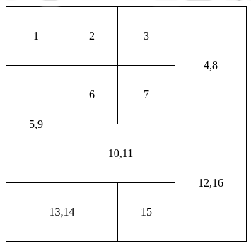

6.5. Tablas#
Las tablas pueden ser más o menos complejas dependiendo de la cantidad de datos y organización que queramos darle.
6.5.1. Tablas simples#
Son las que constan opcionalmente de un título y una sucesión de filas.
Elemento contenedor de la tabla |
|
Establece el título de la tabla |
|
Elemento para definir la fila de una tabla |
|
Celda de cabecera de la tabla |
|
Celda de datos de una tabla |
- table (table)
Es el elemento en el que deben encerrarse toda la tabla. En una tabla simple, está constituida por un elemento opcional
<caption>y una sucesión de elementos de filatr.Nota
No tiene atributos particulares. Hasta HTML4, disponía de un atributo
summaryque permtía hacer una descripción breve del contenido de la tabla. Ahora puede optarse por el título de la tabla que se indica con<caption>o, si no es suficiente, usar <details> dentro del elementocaption:<caption> <details> <summary>Datos de empleo</summary> Datos de empleo de España para el año 2018 extraídos del <a href="https://www.ine.es"><abbr title="Instituto Nacional de Estadística">INE</abbr></a> </details> </caption>
- caption (caption)
Define el título de la tabla. Por lo general, es corto y se usan dentro de él elementos en línea, pero puede ser más complicado.
- tr (tr)
Define una fila de la tabla. Está constituida por elementos
<th>y<td>.
<th> las de cabecera y <td>
las de datos. Pueden contener atributos rowspan y colspan
para fusionarse, pero se tratará más adelante.scope |
col|row|colgroup|rowgroup|auto |
Define las celdas de las que es cabecera esta celda |
Los elementos <th> pueden tener un atributo scope que identifica
cuáles son las celdas de las que es cabecera. La norma tiene un explicación muy
esclarecedora sobre el uso de este atributo.
Ejemplo de uso:
<table>
<caption>Elementos en tablas sencillas</caption>
<tr>
<th>Elemento
<th>Descripción
<tr>
<td>table
<td>Elemento contenedor de la tabla
<tr>
<td>caption
<td>Establece el título de la tabla
<tr>
<td>tr</td>
<td>Elemento para definir la fila de una tabla
<tr>
<td>th
<td>Celda de cabecera de la tabla
<tr>
<td>td
<td>Celda de datos de la tabla
</table>
| Elemento | Descripción |
|---|---|
| table | Elemento contenedor de la tabla |
| caption | Establece el título de la tabla |
| tr | Elemento para definir la fila de una tabla |
| th | Celda de cabecera de la tabla |
| td | Celda de datos de la tabla |
Nota
Por defecto, las tablas no tienen ninguna decoración, ni siquiera el borde de separación entre celdas. Mientras no aprendamos CSS, puede valernos con añadir este código para leerlas algo mejor:
td, th {
border: solid black 1px;
}
6.5.2. Agrupación de filas#
Bajo este epígrafe pretendemos agrupar las filas, lo que puede permitirnos agruparlas semánticamente y, además, cuando las tablas son largas y se pretenden imprimir, repetir una cabecera y un pie en todas las páginas que ocupe la tabla.
Agrupa filas que constituyen una cabecera. |
|
Agrupa filas en el cuerpo de la tabla. |
|
Agrupa filas en el cabo de la tabla. |
<caption> seguido de un elemento opcional
<thead>, uno o varios elementos tbody y un elemento
opcional <tfoot>, dentro de cada uno de los cuales se pueden incluir
filas con el elemento <tr>.Ejemplo de uso:
<table>
<caption>Asistentes</caption>
<thead>
<tr>
<th>Nacionalidad
<th>Cantidad
<tbody>
<tr>
<td>Españoles
<td>100
<tr>
<td>Portugueses
<td>25
<tr>
<td>Franceses
<td>50
<tr>
<td>Italianos
<td>25
<tfoot>
<tr>
<td>Total
<td>100
</table>
| Nacionalidad | Cantidad |
|---|---|
| Españoles | 100 |
| Portugueses | 25 |
| Franceses | 50 |
| Italianos | 25 |
| Total | 100 |
6.5.3. Agrupación de columnas#
Contiene las definiciones de columnas. |
|
Agrupa columnas. |
<colgroup> para contener elementos <col>. Estos
elementos permiten agrupar columnas que comparten una semántica
común. El elemento <colgroup> puede omitir tanto su apertura
como su cierre.Ejemplo de uso:
<table>
<caption>Ciclos formativos en el centro</caption>
<colgroup>
<col>
<col span="2" class="info">
<col class="sanitaria">
<col class="soldadura">
</colgroup>
<tr>
<td>
<td><abbr title="Sistemas Microinformáticos y Redes">SMR</abbr>
<td><abbr title="Administración de Sistemas Informáticos y Redes">ASIR</abbr>
<td><abbr title="Cuidados Auxiliares de Enfermería">CAE</abbr>
<td><abbr title="Soldadura y Calderería">SyC</abbr>
</tr>
<tr>
<td>Grado
<td>Medio
<td>Superior
<td>Medio
<td>Medio
</tr>
</table>
| SMR | ASIR | CAE | SyC | |
| Grado | Medio | Superior | Medio | Medio |
Nota
Gracias a las clases, podremos definir distintos estilos para los grupos de columnas, pero sólo unas pocas propiedades CSS son válidas. De hecho, para lograr el efecto en el ejemplo anterior, se ha usado el CSS:
.tb-ejemplo .info {
background-color: #cdf;
}
.tb-ejemplo .sanitaria {
background-color: #eeb;
}
.tb-ejemplo .soldadura {
background-color: #bda;
}
6.5.4. Agrupación de celdas#
En ocasiones necesitamos fusionar varias celdas en vertical o varias en horizontal.
rowspan |
[num] |
Indica cuántas filas ocupa la celda |
colspan |
[num] |
Indica cuántas columnas ocupa la celda |
Al usar estos atributos las celdas a las que se les usurpa su espacio dejan de existir:
<table>
<!-- El th ocupa 2 columnas y por tanto sólo hay un elemento th -->
<tr>
<th colspan="2">Fusion horizontal
<!-- El td ocupa 2 filas y por tanto la siguiente fila sólo tiene un td -->
<tr>
<td>1
<td rowspan="2">Fusión vertical
<tr>
<td>2
</table>
| Fusion horizontal | |
|---|---|
| 1 | Fusión vertical |
| 2 | |
6.5.5. Ejercicios propuestos#
Recree una siguiente tabla con las siguientes columnas:

Para que la tabla tenga tal aspecto, añada al documento HTML el siguiente estilo:
table { border-collapse:collapse; } td { border: solid black 1px; padding: 2em; text-align: center; }
Cree un HTML con una tabla que contenga el horario de clases del grupo y que cumpla los siguientes requisitos:
Deben aparecer como cabecera los días de lunes a viernes.
En la primera columna deben indicarse las horas de comienzo de cada clase.
El recreo debe encontrarse fusionado en una misma fila de lunes a viernes.
Si se tienen de un mismo módulo dos o más clases consecutivas, deben fusionar las celdas.
Cree una tabla con los siguientes datos sobre tasa de desempleo extraídos del INE:
Comunidad Autónoma
2013
2014
2015
2016
2017
2018
Andalucía
36,26
34,23
29,83
28,25
24,43
21,26
Aragón
20,59
18,85
14,60
13,53
11,37
11,11
Asturias
22,29
20,78
20,33
14,59
14,64
12,86
Baleares
22,72
18,88
17,02
13,80
12,61
10,91
Canarias
33,09
31,08
26,75
24,90
22,04
19,99
Cantabria
19,81
18,42
17,71
12,89
13,49
9,68
Castilla y León
22,02
20,28
17,58
14,81
13,71
11,21
Castilla-La Mancha
28,99
28,50
24,97
22,14
19,74
16,16
Cataluña
21,87
19,88
17,73
14,85
12,63
11,75
Comunidad Valenciana
27,15
23,48
21,45
19,15
16,76
14,30
Extremadura
32,40
29,96
28,07
28,31
25,12
23,10
Galicia
21,88
20,87
17,74
16,29
14,71
12,04
Madrid
20,45
18,00
16,51
14,60
13,75
11,54
Murcia
28,50
27,26
23,51
18,58
17,21
15,83
Navarra
16,44
14,92
13,53
10,01
9,63
9,99
País Vasco
16,58
16,60
12,89
12,27
10,57
9,58
Rioja
20,24
17,17
13,97
10,90
11,51
10,30
Incluya un título para la tabla y la referencia al origen de los datos.